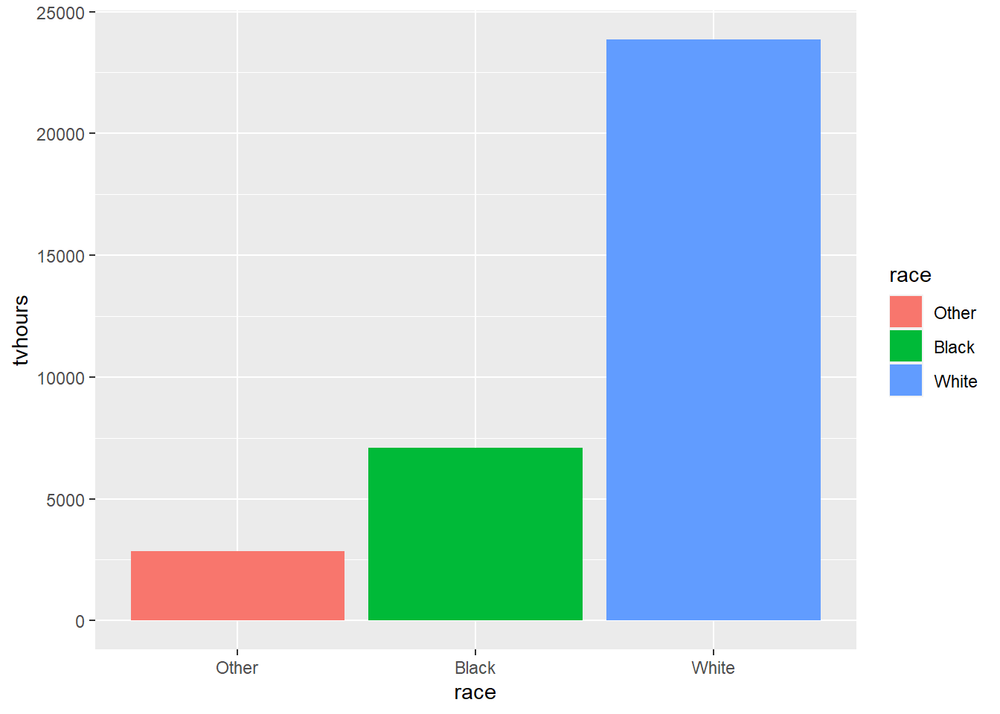

Chapter 4 HTML, CSS and Flexdashboard
Ertugrul Demirci, Bram Gielen, Boris Kamdem Tchuenkam, Max Moolenaar, Niels Saes, Armin Strojil
4.1 HTML and CSS
Image below about how html and css work together.

In a R markdown file you can just use html.
If you want to use css in a r markdown file, you can use the css option:
output: html_document: css: “style.css”
If you want to include multiple css files, you may list them in brackets.
output: html_document: css: [“style-1.css”, “style-2.css”]
You can also use a css chunk to directly use the css in your r markdown file.
{css, echo=FALSE} p { font-size: 20px; }
The chunk option echo = false means that the css will be used on the html, but you will not see the chunk in the knitted file. We will use echo = True in the rest of the document to show the examples.
p {
font-size: 20px;
font-family: "Times New Roman";
}
.example1 {
color: blue;
}
.example2 {
color: red;
}
.example3 {
color: green;
}You can also use divs to style specific elements instead of the whole document.
example 1
example 2
example 3
See the cheat sheets below to see what markdown syntax will turn into in the final report.

R markdown cheat sheet 1

R markdown cheat sheet 2
4.2 Flexdashboard
To install the flexdashboard, you can use the following code
install.packages(“flexdashboard”)
To load the flexdashboard package, you can use
library(flexdashboard)## Warning: package 'flexdashboard' was built under R version 4.1.2You should also make sure that your output is in the form of a flexdashboard, you can do this by changing the output to flexdashboard::flex_dashboard.
The goal of flexdashboard is to make it easy to create interactive dashboards for R, using R Markdown.
Use R Markdown to publish a group of related data visualizations as a dashboard.
Support for a wide variety of components including htmlwidgets; base, lattice, and grid graphics; tabular data; gauges and value boxes; and text annotations.
Flexible and easy to specify row and column-based layouts. Components are intelligently re-sized to fill the browser and adapted for display on mobile devices.
Storyboard layouts for presenting sequences of visualizations and related commentary.
To install the flexdashboard, you can use the following code
install.packages(“flexdashboard”)
To load the flexdashboard package, you can use
You should also make sure that your output is in the form of a flexdashboard, you can do this by changing the output to flexdashboard::flex_dashboard.
The goal of flexdashboard is to make it easy to create interactive dashboards for R, using R Markdown.
Use R Markdown to publish a group of related data visualizations as a dashboard.
Support for a wide variety of components including htmlwidgets; base, lattice, and grid graphics; tabular data; gauges and value boxes; and text annotations.
Flexible and easy to specify row and column-based layouts. Components are intelligently re-sized to fill the browser and adapted for display on mobile devices.
Storyboard layouts for presenting sequences of visualizations and related commentary.
ggplot(gss_cat, aes(race, tvhours, fill=race)) +geom_col()## Warning: Removed 10146 rows containing missing values (position_stack).
You can add an input sidebar to a flexdashboard by adding the {.sidebar} attribute to a column, which indicates that it should be laid out flush to the left with a default width of 250 pixels and a special background color. Sidebars always appear on the left no matter where they are defined within the flow of the document.